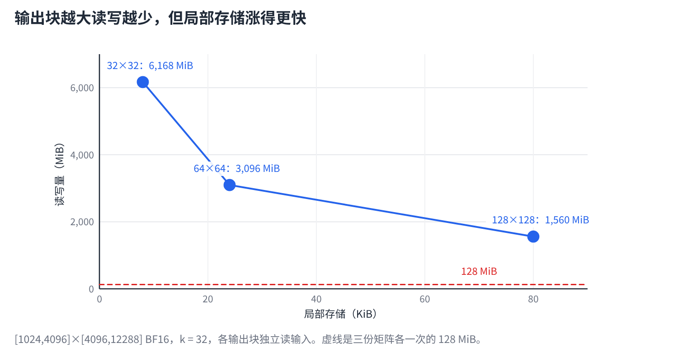
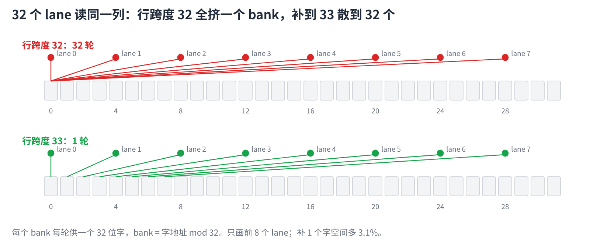
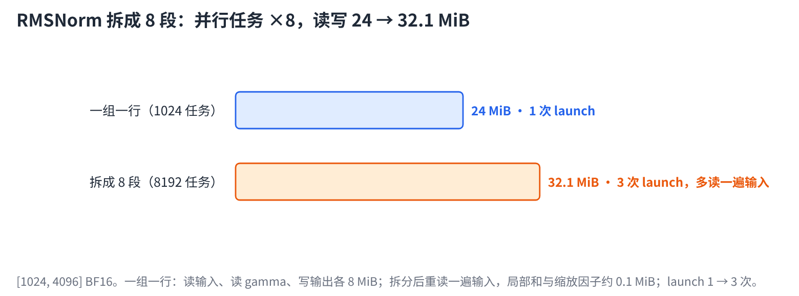
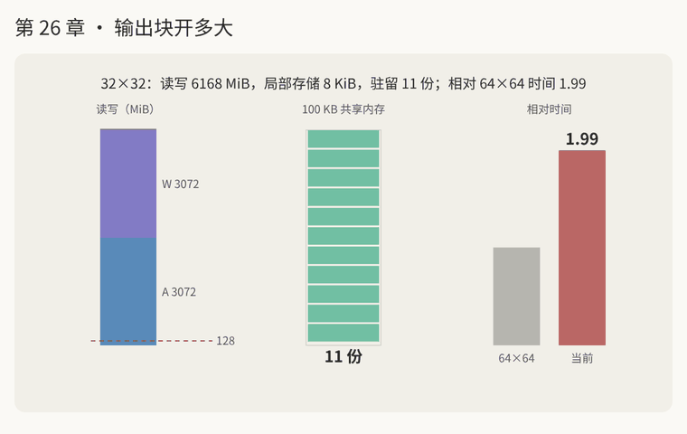

第 26 章 · 单个算子：分块、布局与切分
本地运行
git clone https://github.com/wikieden/ai-infra-from-constraints
cd ai-infra-from-constraints/code/notebooks
pip install jupyterlab torch numpy
jupyter lab ch26_tiling_layout.ipynb也可以下载后直接用 VS Code 打开 .ipynb 运行。需要 GPU 的章节在 Colab 里选「代码执行程序 → 更改运行时类型 → GPU」。
本章回答：一个只需要 128 MiB 读写的矩阵乘，为什么能读出 3 GiB？输出块开大一倍读写就减半，为什么有时反而更慢？同一列 32 个数，为什么补一个字就快 32 倍？把一行归约拆成 8 段，换来了什么、又付出了什么？
讲解日期：2026-11-24 · 上一章：第 25 章 提交、搬移与同步 · 下一章：第 27 章 算子融合与 FlashAttention
对应原文：materials/ai-infra-book/manuscripts/05-算子与运行时.md§5.2 L176–L338（例 5-3，图 5-6 到 5-13）
本章缩写：RMSNorm = Root Mean Square Normalization（均方根 / 归一化）· ULP = Unit in the Last Place（最后一位的单位，同一指数下相邻两个浮点数的间距）· bank = 共享内存中能独立服务请求的分区（存储体）· lane = 一个 warp 里的一个线程。全部缩写见 缩写与术语表
还是第 25 章的投影 \(C = AW\)：\(M = 1024\)、\(K = 4096\)、\(N = 12288\)，BF16。本章计数的位置固定在工作缓冲和下一级存储之间的接口。
讲解
第一步：一个输出要哪些数据，相邻输出用什么（2026-11-24）
类比：拼图。 算 C[i, j] 要拿 A 的第 i 行和 W 的第 j 列；算旁边的 C[i, j+1]，A 还是那一行。手里的这行如果还没放回去，就不用再去取。
原文 L184–L223：
128 MiB 是三份矩阵各经过接口一次的基准。程序怎么排循环，决定同一份数据实际要经过接口几次。
- i-j-k 顺序：内层沿 k 读 W[k, j]，相邻两次地址差 N 个元素，跳着读。
- i-k-j 顺序：内层读 W[k, j]、W[k, j+1]，连续；A[i, k] 用于一整段输出。代价是要同时保存一段输出的累加值，存不下就多读写。
一句话：数学上的复用是固定的，能不能兑现，看两次使用之间数据还在不在手边。
第二步：输出块开多大：少读数据 vs 同时驻留（2026-11-24）
类比：工作台。 台面越大，一次摊开的料越多，跑仓库的次数越少；但台面大了，车间里能同时开工的工作台就少了。
局部存储（原文 L235–L241，例 5-3）：\(m \times n\) 输出块、沿 K 每步 \(k\)：
全矩阵读写（原文 L243–L251）：每个输出块独立读输入，\(N/n\) 个列块各读一遍 A，\(M/m\) 个行块各读一遍 W：
| 输出块（\(k = 32\)） | 局部存储 | 读写 A + W + C | 算术强度 | RTX PRO 6000 一个 SM 驻留 |
|---|---|---|---|---|
| 32×32 | 8 KiB | 3072 + 3072 + 24 = 6168 MiB | 15.9 | 11 块 |
| 64×64 | 24 KiB | 1536 + 1536 + 24 = 3096 MiB | 31.7 | 4 块 |
| 128×128 | 80 KiB | 768 + 768 + 24 = 1560 MiB | 63.0 | 1 块 |

图 26-1 · 三种都远低于 H100 的 295 FLOPs/B：只靠这一级分块，MFU 上限 5% / 11% / 21%，剩下的复用要靠更近的存储层次。
少读不一定快（原文 L267–L281）：RTX PRO 6000 每 SM 共享内存 100 KB（102,400 B），每块另留 1 KiB：24 KiB 的工作集放得下 4 份，80 KiB 只放 1 份。驻留少了，在途请求少了（第 25 章），有效带宽可能下降：
带宽一样时快一倍；大块只拿到四成带宽时 \(0.504 / 0.4 = 1.26\)，反而慢 26%。所以顺序是：先按容量排除放不下的，再按读写量缩小范围，最后实测。
补基础：分块 GEMM 的写法见《CUDA 从线程到 Tensor Core》第 13、14 章。
一句话：输出块越大，每个输入字节参与的乘加越多；但工作集越大，同时驻留的块越少，可能拿不到原来的带宽。
第三步：布局：32 个请求落到几个 bank（2026-11-24）
类比：32 个窗口的银行。 32 个人同时来办事，如果都排到 7 号窗口，就要办 32 轮；分散到 32 个窗口，一轮办完。
原文 L285–L295：共享内存分 32 个 bank，每个 bank 每轮供一个 32 位字，bank 号 = 字地址 mod 32。32×32 的 FP32 暂存块：
| 布局 | 32 个 lane 读同一列 | 代价 |
|---|---|---|
| 行跨度 32 字 | 全落到同一 bank，32 轮 | |
| 行末补 1 个字（padding），跨度 33 | 依次落到 32 个 bank，1 轮 | 4096 → 4224 B，多 3.1% |
| swizzle：第 r 行第 c 列放到 \(c \oplus r\) 列 | 32 个不同 bank，1 轮 | 不多占空间，每次访问先算一次列号 |

图 26-2 · 有效数据和读取次数都没变，变的是请求能不能同时被服务。异步批量复制不能在行间补字，所以 CUTLASS / TMA 用 swizzle。
补基础：bank 冲突见《CUDA 从线程到 Tensor Core》第 7 章。
一句话：padding 多占一点空间换分散，swizzle 不占空间换一次地址计算；都不改计算本身。
第四步：沿哪一维切：并行任务、部分和与浮点次序（2026-11-24）
类比：数一大堆硬币。 一个人数要很久；分给 8 个人各数一份，快了，但最后要把 8 个小计加起来，而且每个人得把自己那堆再过一遍手（重读输入）。
RMSNorm 拆分（原文 L299–L309）：一行 4096 个元素先求平方和得缩放因子，再缩放整行。\([1024, 4096]\) 时一组一行有 1024 组；decode 单请求只有 1 行，大部分执行资源空闲。把每行拆成 8 段：
| 一组一行 | 拆成 8 段 | |
|---|---|---|
| 第一阶段并行任务 | 1024 | 8192 |
| 读写 | 读 8 + gamma 8 + 写 8 = 24 MiB | 再重读 8 MiB 输入 + 局部和、缩放因子约 0.1 MiB = 32.1 MiB |
| kernel launch | 1 | 3 |
| 每组临时数据（FP32） | 16 KiB | 2 KiB，能留在寄存器 |

图 26-3 · 拆分换来并行和更少的临时数据，代价是多读一遍输入和阶段之间的传递。
矩阵乘的三种切法（原文 L311–L317）：切 \(M\) 或 \(N\)，各自得到完整的输出片，需要时再拼；切 \(K\)，得到同一输出的部分和，必须再相加。第二步的输出块是同时切 \(M\)、\(N\)，沿 \(K\) 在块内累加，不需要跨块汇合。
次序改变结果（原文 L319–L331）：浮点加法不满足结合律。FP32 里
差 1 个 ULP。原文对一行 4096 个 BF16 元素算平方和：一组一行的结果比精确值小 175.2 ULP，分 8 段后只差 9.2 ULP；八个局部和的 40,320 种合并次序给出 3 个不同结果；缩放因子最后差 59 ULP。
- 原子加按到达先后累加：同一输入两次运行可能不同。
- 写入缓冲、等全部到齐、按固定次序加：每次一样，但多一次写读、要等最慢的那段。
- 段数随 batch 变（小 batch 才拆）→ 同一行输入在不同 batch 下结果不同。要"输出只由输入决定"，段数和次序都不能随 batch 变（原书第 10 章 §10.5.3 用它解释生成端和训练端的 logprob 差异）。
场景代码：PyTorch 里打开确定性算法，避免用原子加的实现（真实 API）：
import torch
torch.use_deterministic_algorithms(True) # 有不确定实现的算子会报错或换实现
x = torch.randn(1, 4096, device="cuda")
print((x.float() ** 2).sum(-1)) # 同一输入，两次运行结果一致
一句话：拆归约维能增加并行任务、减少临时数据，代价是重读输入、多一次汇合，还会改变浮点结果。
动画演示：输出块开多大

可交互版：animations/26-tiling-layout.html（切换：输出块 32 / 64 / 128；滑块：大块拿到的带宽比例）。
怎么看：
- 左边三段横条是 A 重读、W 重读、C 写出的 MiB（第二步），虚线是 128 MiB 基准；
- 中间是 100 KB 共享内存里能放下几份工作集；
- 右边按"读写量 ÷ 有效带宽"比较相对 64×64 的时间；
- 播放时 32 → 64 → 128（带宽相同）→ 128（只拿到四成带宽，比 64×64 慢 26%）。
练习与作答记录
题 1（第二步）：同一个投影，输出块 256×64、\(k = 32\)。局部存储多少 KiB？A、W 各重读多少 MiB，总读写多少？RTX PRO 6000 一个 SM 能放几份？
作答记录：（待作答）
题 2（第三步）：16×16 的 FP32 暂存块，共享内存 32 个 bank，16 个 lane 同时读同一列。行跨度 16 字时要几轮？补到 17 呢？
作答记录：（待作答）
题 3（第四步）：RMSNorm 输入 \([256, 8192]\) BF16，拆成 16 段。第一阶段有多少个并行任务？总读写比一组一行多多少 MiB（局部和、缩放因子用 FP32）？
作答记录：（待作答）
原书实验 5-1（L989：输出块 64×128）。想多练可以做。
口诀
手里这行还没放回，下一个输出就不用再取；
台面越大跑得越少，台子多了才能轮着等料；
都排一个窗口办三十二轮，补一格就一轮；
八个人分着数快，最后要加小计，还得再过一遍手，次序一换尾数就变。
本章复习卡片
I101（128 MiB 基准与分块读写公式 6168 / 3096 / 1560）、I102（大块少读却可能变慢：驻留与 1.26 倍）、I103（bank 冲突、padding 与 swizzle）、I104（拆归约维：并行、重读与浮点次序）。练习做完后，按答错、卡住的地方再补。
附录 · 延伸阅读
留给以后深入学习用，不影响本章主线。★ 是建议先读的。
推荐阅读
| 读什么 | 读哪里 | 读它为了什么 |
|---|---|---|
| ★ AII 第 5 章 | §5.2 L176–L338 | 本章原文，例 5-3 |
| 《CUDA 从线程到 Tensor Core》第 7、13、14、19 章 | bank、SGEMM 分块、寄存器分块、CuTe 布局 | 本章每步的 CUDA 写法 |
| CUTLASS 文档 | GEMM 分层、swizzle | 工业实现怎么切块和换地址 |
| Goldberg，What Every Computer Scientist Should Know About Floating-Point Arithmetic | 舍入与结合律 | 第四步的数值基础 |
| AII 第 10 章 §10.5.3 | 生成端与训练端的 logprob 差异 | 次序变化的后果 |
数学原理
- 重复读取计数：每个列块读一遍 A、每个行块读一遍 W；块边长翻倍，读取减半。
- 取模映射：bank \(= (r \cdot s + c) \bmod 32\)；\(s = 32\) 时与 \(r\) 无关，\(s = 33\) 时随 \(r\) 递增。
- 异或置换：\(c \oplus r\) 对固定 \(c\) 是 \(r\) 的双射。
- 浮点非结合：每次加法都舍入，丢掉的位不可恢复。
公式清单
| 公式 | 意思 |
|---|---|
| \(V_{\mathrm{once}} = 2(MK + KN + MN)\) | 三份矩阵各一次 |
| \(S = 2mk + 2kn + 4mn\) | 输出块的局部存储 |
| \(V = 2MK \cdot N/n + 2KN \cdot M/m + 2MN\) | 各块独立读输入的总读写 |
| \(T_{128}/T_{64} = (V_{128}/V_{64})(B_{64}/B_{128})\) | 读写和有效带宽一起比较 |
| bank \(= \text{字地址} \bmod 32\) | 共享内存分区 |
代码对照：把本章的数字用代码算一遍
纯 Python，不需要 GPU。代码在仓库本地
ai-infra/solutions/chapter-code/ch26_tiling_layout.py，配套测试tests/test_ch26.py：
bash cd ai-infra/solutions/chapter-code uv run python ch26_tiling_layout.py # 一步一步打印 uv run pytest tests/test_ch26.py
讲义 ↔ 代码：
| 讲义 | 公式 | 写法 | 跑出来 |
|---|---|---|---|
| 第二步 局部存储 | \(2mk + 2kn + 4mn\) | tile_local_kib(m, n) |
8 / 24 / 80 KiB |
| 第二步 读写 | 重复读取 | tile_traffic_mib(m, n) |
6168 / 3096 / 1560 MiB |
| 第二步 驻留 | 100 KB ÷（工作集 + 1 KiB） | resident(kib) |
11 / 4 / 1 |
| 第三步 bank | 取模计数 | bank_rounds(32)、bank_rounds(33) |
32 / 1 轮 |
| 第四步 RMSNorm | rmsnorm_traffic_mib() |
24 → 32.1 MiB | |
| 第四步 次序 | FP32 舍入 | f32(...) |
差 1 ULP |
关键几行：
def bank_rounds(stride_words, lanes=32, banks=32, swizzle=False):
hits = {}
for r in range(lanes): # 第 r 个 lane 读第 r 行、第 0 列
col = (0 ^ r) if swizzle else 0
b = (r * stride_words + col) % banks
hits[b] = hits.get(b, 0) + 1
return max(hits.values()) # 最挤的 bank 要服务几次 = 几轮
代码里才看得到的 3 件事：
- 64×64 的算术强度代码得 31.75，原文写 31.7（截断而非四舍五入）。
f32用struct.pack("f")把 Python 的双精度数舍入到 FP32，不依赖 numpy。- swizzle 那行
col = 0 ^ r看起来多余，换成读第 c 列时就是c ^ r，读哪一列都是 1 轮。
自己改一改（不影响练习答案）：
- 给
tile_traffic_mib加 L2 复用：相邻 4 个列块共享一次 A 读取，总量变成多少？ - 用
bank_rounds试行跨度 34、48、64，哪些跨度不冲突？规律是什么？ - 用
f32做 4096 个随机数的平方和，比较 1 段、8 段、32 段的结果差几个 ULP。